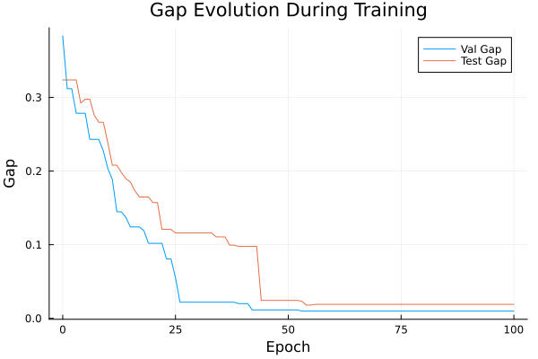
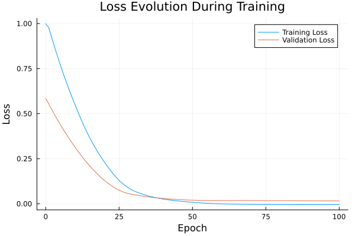

Basic Tutorial: Training with FYL on Argmax Benchmark
This tutorial demonstrates the basic workflow for training a policy using the Perturbed Fenchel-Young Loss algorithm.
Setup
using DecisionFocusedLearningAlgorithms
using DecisionFocusedLearningBenchmarks
using MLUtils: splitobs
using PlotsCreate Benchmark and Data
b = ArgmaxBenchmark()
dataset = generate_dataset(b, 100)
train_data, val_data, test_data = splitobs(dataset; at=(0.3, 0.3, 0.4))(DecisionFocusedLearningBenchmarks.Utils.DataSample{@NamedTuple{}, @NamedTuple{}, Matrix{Float32}, Vector{Float32}, Vector{Float32}}[DataSample(x=Float32[-2.0946 0.70965 … 0.269551 -1.8174; -1.29778 -0.346384 … 1.08985 1.9866; … ; -0.40879 0.460097 … -1.42751 -0.92803; 0.441415 0.964426 … -0.197874 0.576729], θ=Float32[-0.0685125, -0.257063, -1.65506, -0.862841, 1.03148, 0.454677, 0.0047442, -0.557695, -0.162932, -1.20963], y=Float32[0.0, 0.0, 0.0, 0.0, 1.0, 0.0, 0.0, 0.0, 0.0, 0.0]), DataSample(x=Float32[-0.805178 0.519287 … 1.44661 -0.540566; -0.116384 -0.0220376 … -0.263504 1.3951; … ; -0.813797 -0.861572 … 1.1095 1.38494; -0.550975 -0.587828 … 0.937668 -0.0345466], θ=Float32[0.36732, 0.827075, 0.730604, -2.31613, -0.00388669, -0.250615, 0.390859, 0.574416, 0.344268, -0.510927], y=Float32[0.0, 1.0, 0.0, 0.0, 0.0, 0.0, 0.0, 0.0, 0.0, 0.0]), DataSample(x=Float32[-0.512987 0.228353 … 0.727065 1.29983; 1.31836 0.136557 … 0.0980466 -0.375463; … ; -1.9419 0.195619 … -0.259746 -1.64772; 0.551907 1.05477 … 0.960718 0.564889], θ=Float32[0.225222, -0.233694, 0.964965, -0.974145, -0.276858, 0.54612, -0.204358, -0.259682, 0.996116, 0.683636], y=Float32[0.0, 0.0, 0.0, 0.0, 0.0, 0.0, 0.0, 0.0, 1.0, 0.0]), DataSample(x=Float32[1.37262 -0.173041 … 0.273273 -0.977329; -0.786881 -1.10333 … 0.0899785 -0.60781; … ; 1.10926 -0.415808 … -0.468812 0.206659; 1.21885 0.501219 … -0.706777 1.17666], θ=Float32[0.00150112, 1.04822, 0.254754, -1.82349, 0.458069, 0.528486, -1.07833, -0.957713, -0.169107, -0.516465], y=Float32[0.0, 1.0, 0.0, 0.0, 0.0, 0.0, 0.0, 0.0, 0.0, 0.0]), DataSample(x=Float32[0.74887 0.472918 … -0.496627 -0.78341; 0.65293 0.495249 … -1.11797 1.11204; … ; -0.126606 -0.357055 … -0.168868 -1.90091; 0.110462 0.0780143 … 0.0531902 -0.257989], θ=Float32[0.0861348, 0.883451, -1.88334, -0.00589305, 1.7332, 0.264194, 0.654554, 0.380533, 0.191322, 0.262405], y=Float32[0.0, 0.0, 0.0, 0.0, 1.0, 0.0, 0.0, 0.0, 0.0, 0.0]), DataSample(x=Float32[0.62875 -0.549984 … 0.415669 0.496937; 0.11579 -0.499513 … 1.12751 -0.449616; … ; -0.263987 -0.343767 … -1.12899 -0.172456; -1.98971 2.06314 … -1.59069 0.315244], θ=Float32[0.210899, -0.584188, 0.125388, -0.783987, 2.03694, -1.61069, 0.132338, 0.186783, 0.73925, 0.770801], y=Float32[0.0, 0.0, 0.0, 0.0, 1.0, 0.0, 0.0, 0.0, 0.0, 0.0]), DataSample(x=Float32[-0.991152 -0.321758 … 0.939655 -0.389459; -1.07878 -1.18934 … -0.935231 -0.782938; … ; 0.389416 0.57731 … 0.942147 1.4582; -0.553176 -0.58378 … 0.275911 0.810774], θ=Float32[0.00257865, 0.302737, -0.778412, 0.841265, -0.203893, -1.76687, 1.06933, 0.971544, 0.212362, -0.764995], y=Float32[0.0, 0.0, 0.0, 0.0, 0.0, 0.0, 1.0, 0.0, 0.0, 0.0]), DataSample(x=Float32[-0.0708968 0.265676 … -1.82489 0.751181; -0.702993 -0.870363 … -0.0570622 -1.71588; … ; -2.97821 -1.40009 … -0.476389 0.242213; 0.367261 -0.338684 … 2.54524 0.391937], θ=Float32[1.62988, 0.9836, 0.233553, -0.852661, -0.259751, -0.395252, -0.00646592, -0.782196, -1.35701, 0.697481], y=Float32[1.0, 0.0, 0.0, 0.0, 0.0, 0.0, 0.0, 0.0, 0.0, 0.0]), DataSample(x=Float32[-1.31865 -1.95299 … 1.14542 -1.55446; 1.11817 0.548969 … -1.14907 -0.340402; … ; 0.085002 -0.387543 … 1.07371 0.611633; -0.145397 1.74491 … 0.738963 1.24922], θ=Float32[-1.01426, -1.45774, 0.352321, -0.331807, 0.364522, 0.476995, 1.118, 0.820601, 0.485616, -1.26855], y=Float32[0.0, 0.0, 0.0, 0.0, 0.0, 0.0, 1.0, 0.0, 0.0, 0.0]), DataSample(x=Float32[-0.121699 -0.806099 … -0.430575 0.293851; 0.849907 -1.08608 … 1.28108 -1.36323; … ; -1.05854 -0.484778 … 0.429481 -0.243739; -0.24408 0.183609 … -1.48664 -0.307893], θ=Float32[-0.112191, 0.165944, -1.71702, -2.00348, -0.0729796, 1.07738, 1.70713, -1.41132, -0.626093, 0.733449], y=Float32[0.0, 0.0, 0.0, 0.0, 0.0, 0.0, 1.0, 0.0, 0.0, 0.0]) … DataSample(x=Float32[0.108419 0.979507 … -0.0904933 1.16204; 0.594946 2.01903 … -0.0853344 -0.312935; … ; 0.145722 0.319248 … 2.27193 -0.524361; 0.989934 1.35626 … 0.952368 0.86437], θ=Float32[-0.77329, -0.327945, -0.439174, -0.113608, 0.719716, -1.93535, -0.277225, -1.48965, -1.04007, 0.950264], y=Float32[0.0, 0.0, 0.0, 0.0, 0.0, 0.0, 0.0, 0.0, 0.0, 1.0]), DataSample(x=Float32[0.223973 -0.467301 … -0.401436 1.30729; -0.940457 0.903298 … 1.04169 0.885673; … ; 0.599579 -1.0975 … 1.04004 0.280663; 1.0937 -0.285432 … 0.375024 0.769798], θ=Float32[0.252721, 0.870354, -1.98479, -0.918244, -0.187824, 0.702226, -0.677832, -0.338299, -0.916533, 0.215896], y=Float32[0.0, 1.0, 0.0, 0.0, 0.0, 0.0, 0.0, 0.0, 0.0, 0.0]), DataSample(x=Float32[-1.15524 -0.355938 … 0.7442 -0.225033; -0.862606 -1.04181 … -0.727452 1.28237; … ; -0.207523 2.25916 … 0.916886 0.00832719; 0.70479 -0.0386264 … -0.347895 1.77944], θ=Float32[-0.251436, -0.598935, -0.631119, -0.689698, -0.0226551, -0.795166, 0.811146, -0.580873, -0.598548, -0.84497], y=Float32[0.0, 0.0, 0.0, 0.0, 0.0, 0.0, 1.0, 0.0, 0.0, 0.0]), DataSample(x=Float32[2.17547 -0.762708 … 0.982761 -0.0312327; 0.232487 -0.380341 … -1.14087 0.428795; … ; -0.749454 -1.50098 … 0.384197 0.975498; 0.243569 -1.11147 … -0.12764 -0.250186], θ=Float32[1.85311, 0.51248, 0.158075, 0.411786, 0.42759, 0.0923467, 0.125415, -0.0564801, 0.70822, -0.0169623], y=Float32[1.0, 0.0, 0.0, 0.0, 0.0, 0.0, 0.0, 0.0, 0.0, 0.0]), DataSample(x=Float32[-1.58443 -0.0688661 … -1.11335 -1.60407; 1.15789 -0.596635 … -0.276582 0.0665275; … ; 0.774628 -1.54167 … -1.22019 -2.22437; -1.92652 1.50887 … -1.01109 -0.0583274], θ=Float32[-0.768112, 0.357565, 0.683795, 0.368569, 0.704793, -1.32651, -0.499842, -0.655076, -0.0730771, 0.191381], y=Float32[0.0, 0.0, 0.0, 0.0, 1.0, 0.0, 0.0, 0.0, 0.0, 0.0]), DataSample(x=Float32[1.10976 -0.685276 … 0.331237 1.00059; -0.308754 0.445925 … -0.300832 -0.0551577; … ; 0.168479 -1.21056 … 0.632279 0.284979; -1.15961 2.0217 … 1.72665 -0.805383], θ=Float32[0.653971, 0.232318, -0.634902, -0.232864, 0.669595, -0.506181, 0.259181, -0.279961, -0.417858, 0.568147], y=Float32[0.0, 0.0, 0.0, 0.0, 1.0, 0.0, 0.0, 0.0, 0.0, 0.0]), DataSample(x=Float32[-2.05921 -0.798453 … -0.399494 0.813881; -0.374969 -0.337082 … -0.0338602 -0.405202; … ; -0.63957 1.00786 … -1.4598 0.322729; -0.0690767 -0.00851875 … -0.175555 -0.787647], θ=Float32[-0.405553, -1.41762, -0.285356, -0.255934, -1.99457, 0.810615, 0.527256, 0.971324, 0.356538, 0.00603035], y=Float32[0.0, 0.0, 0.0, 0.0, 0.0, 0.0, 0.0, 1.0, 0.0, 0.0]), DataSample(x=Float32[0.663119 -1.25187 … 0.0509339 -0.346978; 0.998195 -0.107823 … -1.18272 1.14631; … ; 0.874236 0.354276 … -0.430429 -0.225804; -0.823033 0.481634 … 0.701848 0.128228], θ=Float32[-0.560603, -0.657974, 1.41043, 0.6531, -0.432282, -0.633393, -0.467203, 0.469973, 0.687689, -0.201298], y=Float32[0.0, 0.0, 1.0, 0.0, 0.0, 0.0, 0.0, 0.0, 0.0, 0.0]), DataSample(x=Float32[-0.920254 1.12562 … 2.5488 -1.26288; 0.07805 0.856331 … 1.07065 0.0755678; … ; 1.03197 -1.52547 … -1.51772 0.139389; 0.496644 0.115553 … -1.08461 1.03442], θ=Float32[-1.35979, 1.85, 0.163569, 0.711939, 0.295872, -0.780548, -0.501731, -0.650113, 1.97087, -1.18027], y=Float32[0.0, 0.0, 0.0, 0.0, 0.0, 0.0, 0.0, 0.0, 1.0, 0.0]), DataSample(x=Float32[0.321063 -1.99686 … -0.818523 -0.869048; 0.677939 1.53742 … -0.885227 -0.302955; … ; 0.57936 1.80892 … 2.30465 -0.870188; -0.139233 0.390493 … 1.04809 1.07688], θ=Float32[-0.334504, -2.05655, 0.0077322, -0.103734, -1.338, 1.39821, -0.39633, 1.83873, -1.19334, 0.454473], y=Float32[0.0, 0.0, 0.0, 0.0, 0.0, 0.0, 0.0, 1.0, 0.0, 0.0])], DecisionFocusedLearningBenchmarks.Utils.DataSample{@NamedTuple{}, @NamedTuple{}, Matrix{Float32}, Vector{Float32}, Vector{Float32}}[DataSample(x=Float32[0.29415 -0.844535 … -0.779437 0.340905; 0.726021 -0.458533 … -0.110406 0.397505; … ; 0.906946 0.114704 … 1.433 0.820699; 1.96278 -0.867879 … -2.21106 -0.908826], θ=Float32[-0.511278, 0.249835, -0.0210463, 1.72537, -0.495798, 0.308271, 0.46815, 0.628758, -0.86604, 0.346592], y=Float32[0.0, 0.0, 0.0, 1.0, 0.0, 0.0, 0.0, 0.0, 0.0, 0.0]), DataSample(x=Float32[-0.929209 0.480609 … -0.625154 0.264137; -0.356735 -0.617392 … -0.0817548 -0.295261; … ; 0.427806 0.39667 … 1.40542 0.0208276; -0.930804 0.726687 … 0.302071 -2.26167], θ=Float32[-0.624797, -0.181296, 0.441184, -0.612542, 0.467757, 0.562436, 0.626491, 0.942704, -1.36436, 1.00115], y=Float32[0.0, 0.0, 0.0, 0.0, 0.0, 0.0, 0.0, 0.0, 0.0, 1.0]), DataSample(x=Float32[-0.718139 0.383794 … -0.396401 -1.25901; -0.711556 -0.307663 … -1.22463 1.44248; … ; -0.337985 0.941705 … -0.311002 0.121167; -0.169649 -0.404552 … -1.82873 0.110138], θ=Float32[0.0308913, -0.191471, -0.165785, -0.959004, -0.254832, -0.932287, -0.921943, 0.4947, 0.982656, -1.05688], y=Float32[0.0, 0.0, 0.0, 0.0, 0.0, 0.0, 0.0, 0.0, 1.0, 0.0]), DataSample(x=Float32[1.16267 0.787282 … -1.52003 1.57739; 1.51008 0.664661 … -1.09002 3.18879; … ; -0.677704 0.259077 … 0.720173 -0.829537; 0.495282 -0.129995 … 0.4334 -1.60496], θ=Float32[0.770794, 0.430163, -1.16927, 0.487925, 0.371417, -0.767989, -0.471356, -0.660286, -1.03835, 0.403465], y=Float32[1.0, 0.0, 0.0, 0.0, 0.0, 0.0, 0.0, 0.0, 0.0, 0.0]), DataSample(x=Float32[-2.21779 1.64043 … -2.2569 0.182858; -0.362056 0.0970922 … 0.688161 0.231523; … ; 0.997951 -1.06018 … 1.31075 -1.32045; 0.03059 0.454933 … 0.269605 -0.615426], θ=Float32[-1.6221, 1.67525, 1.15436, 0.110115, 0.452252, -0.566745, -1.51647, 0.309521, -1.99073, 0.109582], y=Float32[0.0, 1.0, 0.0, 0.0, 0.0, 0.0, 0.0, 0.0, 0.0, 0.0]), DataSample(x=Float32[-1.13546 0.86695 … 0.445225 1.35442; -0.170849 1.94629 … 0.324639 -0.0146784; … ; 0.349178 -0.651929 … 0.527298 -0.041317; 0.475806 1.4288 … -0.750189 -2.19521], θ=Float32[-0.916584, -0.213912, 0.499047, -1.8827, -0.56708, -0.208411, 0.362919, 0.547407, 0.459136, 1.03234], y=Float32[0.0, 0.0, 0.0, 0.0, 0.0, 0.0, 0.0, 0.0, 0.0, 1.0]), DataSample(x=Float32[0.897349 -0.204063 … 1.04079 -1.35221; 0.590978 0.25499 … 0.199298 -0.595811; … ; 0.760098 0.0639562 … -2.40754 0.702281; 1.63137 0.12644 … 0.723574 1.74488], θ=Float32[-0.105738, -0.172065, 1.31117, 1.6606, -0.794734, 0.44489, 0.824819, 1.08418, 1.27957, -1.27107], y=Float32[0.0, 0.0, 0.0, 1.0, 0.0, 0.0, 0.0, 0.0, 0.0, 0.0]), DataSample(x=Float32[0.37128 -0.797616 … -0.242431 -1.76935; 1.24781 -0.739512 … 0.0831933 0.587647; … ; 1.37019 -0.0745484 … 0.819814 -0.612037; -0.188031 0.157634 … 0.0488418 0.128811], θ=Float32[-1.22639, -0.513796, -1.01229, 0.338171, 1.54381, 0.581322, -0.0407535, -0.0958653, -0.98559, -1.11557], y=Float32[0.0, 0.0, 0.0, 0.0, 1.0, 0.0, 0.0, 0.0, 0.0, 0.0]), DataSample(x=Float32[0.398402 -0.894456 … -0.274012 0.338859; -1.17814 0.0950256 … 1.17659 0.808432; … ; -0.717804 0.47365 … 0.0823127 2.12287; 0.771993 0.736784 … -0.968177 -0.793929], θ=Float32[1.10067, -1.23352, -0.357284, 0.611433, -1.06856, 0.978195, 1.48198, 0.667247, -0.379068, -0.776536], y=Float32[0.0, 0.0, 0.0, 0.0, 0.0, 0.0, 1.0, 0.0, 0.0, 0.0]), DataSample(x=Float32[-1.20675 1.70401 … 1.65341 0.0890224; 0.714636 -0.830593 … 0.446563 0.176907; … ; -1.66304 -0.150486 … 1.57201 0.258376; -0.227507 1.09916 … 1.00861 -1.52224], θ=Float32[0.341593, 1.50323, -0.482266, -0.0707082, 0.210349, -0.958344, -1.37404, -0.780443, 0.00819068, 0.432471], y=Float32[0.0, 1.0, 0.0, 0.0, 0.0, 0.0, 0.0, 0.0, 0.0, 0.0]) … DataSample(x=Float32[0.143897 0.00172063 … 0.0212211 -0.526992; 1.32184 -0.466651 … 0.305341 -0.303128; … ; 0.899528 1.30972 … 1.03323 0.411431; -0.395132 0.106367 … 0.117919 -0.172231], θ=Float32[-0.451468, -0.908547, 0.783721, -0.145921, 1.4924, -0.66462, -0.750974, 0.00102958, -0.261742, -0.457058], y=Float32[0.0, 0.0, 0.0, 0.0, 1.0, 0.0, 0.0, 0.0, 0.0, 0.0]), DataSample(x=Float32[0.365717 0.0674728 … 0.865077 -0.049773; -0.721694 -0.939422 … -2.66984 -1.54177; … ; -0.552121 2.04804 … 0.435866 0.0603081; -0.0453623 -0.0951709 … -0.451168 -1.5501], θ=Float32[0.72339, -0.0899883, -1.7311, -0.45709, -0.211726, 0.0481578, 0.66382, 0.654506, 1.51019, 0.508122], y=Float32[0.0, 0.0, 0.0, 0.0, 0.0, 0.0, 0.0, 0.0, 1.0, 0.0]), DataSample(x=Float32[-0.827869 0.231915 … -0.397454 -0.855297; 1.60475 -0.929981 … 1.30276 1.2377; … ; 1.68139 -0.37309 … 0.260319 -0.0364989; 1.36446 -1.62221 … 0.237394 0.309051], θ=Float32[-1.74381, 0.691421, 0.219656, -0.353996, -1.13771, -0.0835107, 0.898887, 0.233674, -0.756636, -0.320868], y=Float32[0.0, 0.0, 0.0, 0.0, 0.0, 0.0, 1.0, 0.0, 0.0, 0.0]), DataSample(x=Float32[-0.962366 -0.60267 … 0.890436 2.3558; -1.27673 2.65512 … -2.72187 -1.01573; … ; -0.631068 0.323428 … -0.204515 0.671651; 0.531168 1.41887 … 0.445913 0.997483], θ=Float32[0.0481146, -1.66223, -0.0779153, -0.0590871, 0.148196, -1.20967, -0.412062, 0.562297, 1.15956, 1.23058], y=Float32[0.0, 0.0, 0.0, 0.0, 0.0, 0.0, 0.0, 0.0, 0.0, 1.0]), DataSample(x=Float32[-1.99633 -0.0498409 … -0.654446 -0.612; -0.335089 0.226667 … 0.905527 -0.0688692; … ; 0.728472 0.0277633 … 0.107025 -1.64015; 0.920418 -0.829299 … 0.35488 0.443845], θ=Float32[-1.60966, -0.345586, -0.694204, 0.948392, 0.580339, -0.327383, 0.00113215, -0.297192, -1.4135, 0.732054], y=Float32[0.0, 0.0, 0.0, 1.0, 0.0, 0.0, 0.0, 0.0, 0.0, 0.0]), DataSample(x=Float32[0.820397 1.88931 … 1.02694 1.37372; -1.58913 0.645494 … -0.184365 -0.025347; … ; 1.06319 -1.52993 … 0.647655 -0.0978813; 0.567518 0.37617 … 1.02181 -0.980929], θ=Float32[0.156034, 2.04284, -0.330963, 0.394468, 0.448756, -0.0299986, 0.442331, 1.09592, 0.506466, 1.06881], y=Float32[0.0, 1.0, 0.0, 0.0, 0.0, 0.0, 0.0, 0.0, 0.0, 0.0]), DataSample(x=Float32[1.29345 -1.88371 … -0.615144 0.187665; 0.46496 -2.21588 … -1.38224 -0.491689; … ; 1.0766 -0.47928 … 0.281688 0.591848; -1.86753 -2.85396 … -0.261285 0.42094], θ=Float32[-0.113133, 0.886464, 1.44483, 0.081762, 0.273742, 0.0886948, -0.782277, -1.51052, 0.190673, 0.302001], y=Float32[0.0, 0.0, 1.0, 0.0, 0.0, 0.0, 0.0, 0.0, 0.0, 0.0]), DataSample(x=Float32[1.05701 -1.32732 … 0.114161 0.477138; -1.41049 1.26466 … -0.261835 -0.40905; … ; 0.647758 -1.3109 … 0.456816 0.726961; 1.83338 -0.170588 … -0.842709 1.44317], θ=Float32[0.400163, -0.259634, 0.275859, 0.42891, -0.0208063, -0.805651, -0.215124, 0.826486, 0.279831, -0.155757], y=Float32[0.0, 0.0, 0.0, 0.0, 0.0, 0.0, 0.0, 1.0, 0.0, 0.0]), DataSample(x=Float32[0.409226 1.28378 … -0.212893 -1.49202; -0.340302 0.229359 … -1.35434 -0.285328; … ; -0.972448 -1.12209 … 1.32474 -0.78761; 2.37088 0.588265 … -2.0277 1.66862], θ=Float32[0.567486, 0.97652, -0.0412657, 0.637941, 0.15303, -0.232934, -0.459293, 0.931228, 0.0388993, -0.968034], y=Float32[0.0, 1.0, 0.0, 0.0, 0.0, 0.0, 0.0, 0.0, 0.0, 0.0]), DataSample(x=Float32[-0.259501 -0.0878497 … -2.2139 -0.782341; 0.895941 -1.76147 … 1.9351 0.169738; … ; -1.53973 -0.907135 … -0.888492 0.766984; 0.681597 0.332782 … -0.379852 0.33159], θ=Float32[0.144892, 1.03818, -0.656314, 0.64687, -0.490299, -1.52895, 0.968816, -0.919502, -1.94265, -0.991511], y=Float32[0.0, 1.0, 0.0, 0.0, 0.0, 0.0, 0.0, 0.0, 0.0, 0.0])], DecisionFocusedLearningBenchmarks.Utils.DataSample{@NamedTuple{}, @NamedTuple{}, Matrix{Float32}, Vector{Float32}, Vector{Float32}}[DataSample(x=Float32[-1.57716 1.01438 … 0.205859 -0.808099; 0.993207 1.15923 … 1.08796 1.1214; … ; -2.1842 -0.548146 … 0.0310048 -1.83151; 2.12691 -0.143534 … 0.852119 -0.343301], θ=Float32[-0.716756, 0.374115, -0.342917, -1.64849, -0.430025, -0.132357, -0.777491, -0.657698, -0.273204, -0.547811], y=Float32[0.0, 1.0, 0.0, 0.0, 0.0, 0.0, 0.0, 0.0, 0.0, 0.0]), DataSample(x=Float32[0.846964 0.7244 … 0.267005 0.687651; -0.629872 1.29652 … 1.53115 -0.0775025; … ; 1.34288 -1.12279 … 0.0779323 -0.228263; -0.775991 0.164326 … -0.96164 -0.690612], θ=Float32[1.0604, 0.283589, 0.333608, -1.14753, -1.1535, 0.264089, -0.378436, 0.227987, -0.183748, 0.187124], y=Float32[1.0, 0.0, 0.0, 0.0, 0.0, 0.0, 0.0, 0.0, 0.0, 0.0]), DataSample(x=Float32[0.816801 1.55857 … 1.92153 -1.76161; -0.701954 0.928288 … 0.840488 1.12246; … ; -0.0256348 -0.5615 … -0.295707 -0.790847; 0.486501 -0.136805 … -1.70759 0.658622], θ=Float32[0.939252, 0.774239, -1.5984, -0.70873, 0.505215, -1.08118, 0.0780711, 0.879908, 0.756724, -0.442778], y=Float32[1.0, 0.0, 0.0, 0.0, 0.0, 0.0, 0.0, 0.0, 0.0, 0.0]), DataSample(x=Float32[-1.21041 0.343108 … 0.415359 0.598073; 0.659226 1.04637 … 0.610027 0.637229; … ; -0.541211 -1.5781 … -0.00540014 -1.19222; -0.848586 0.353475 … 0.25561 0.560352], θ=Float32[-0.586844, 0.771984, -0.99047, 1.24616, 0.403483, 0.846162, -0.652921, -0.515473, 0.271093, 0.592645], y=Float32[0.0, 0.0, 0.0, 1.0, 0.0, 0.0, 0.0, 0.0, 0.0, 0.0]), DataSample(x=Float32[-1.37067 -0.450137 … 0.192865 1.45512; -0.00782383 0.303305 … 0.506676 -0.34348; … ; 2.33926 -1.3818 … -0.702967 0.921243; -1.33875 -0.518091 … -0.521283 1.56161], θ=Float32[-1.48388, 0.446035, 0.25881, -0.943627, -0.187371, -1.65744, 0.966771, -0.756497, 0.191956, 0.764123], y=Float32[0.0, 0.0, 0.0, 0.0, 0.0, 0.0, 1.0, 0.0, 0.0, 0.0]), DataSample(x=Float32[0.913068 1.90609 … -0.285966 0.842216; -0.577128 0.383671 … 0.573279 -1.22592; … ; 1.06796 0.257749 … 0.0472178 1.33495; 0.487918 -1.28535 … -1.27335 0.574259], θ=Float32[0.424292, 1.7602, -0.467073, 0.721422, 1.41681, 0.296109, 0.697549, 0.0110679, -0.115362, 0.719027], y=Float32[0.0, 1.0, 0.0, 0.0, 0.0, 0.0, 0.0, 0.0, 0.0, 0.0]), DataSample(x=Float32[0.116875 0.700128 … 0.49363 -1.48888; 1.09513 0.460842 … 0.393379 -1.60072; … ; -1.09632 0.894004 … -0.887516 -0.556907; -0.480096 -0.0798651 … 0.874125 0.45719], θ=Float32[0.0726086, -0.724915, 0.0253142, -0.823995, 1.50885, -0.396937, 0.379361, -0.35403, 0.484519, 0.420496], y=Float32[0.0, 0.0, 0.0, 0.0, 1.0, 0.0, 0.0, 0.0, 0.0, 0.0]), DataSample(x=Float32[0.755863 1.05953 … 1.23658 -1.48446; 1.31788 1.53936 … 0.00210235 -1.97999; … ; -1.47048 -0.0598762 … -0.913478 -0.857544; -0.777778 -0.0657023 … 1.14496 -1.92052], θ=Float32[-0.0443169, -0.240916, -0.362087, 0.0778717, -0.463202, 1.32002, -0.462377, 0.564337, 0.854843, 0.565273], y=Float32[0.0, 0.0, 0.0, 0.0, 0.0, 1.0, 0.0, 0.0, 0.0, 0.0]), DataSample(x=Float32[0.144679 0.65071 … 1.70069 0.443443; 0.108408 0.290504 … -0.229958 1.51626; … ; 1.70753 -0.385045 … 0.164961 -0.500843; -1.59102 1.75496 … 0.157037 1.58279], θ=Float32[-0.13221, 0.714826, -0.713761, -0.278738, -0.852172, -1.18388, -1.57027, -0.0704213, 0.896767, 0.117857], y=Float32[0.0, 0.0, 0.0, 0.0, 0.0, 0.0, 0.0, 0.0, 1.0, 0.0]), DataSample(x=Float32[0.170974 0.433116 … -0.118826 0.61428; 1.19964 0.183592 … 0.525505 -2.15426; … ; -0.675542 0.526834 … -0.00934619 -0.0368248; -0.0415034 1.26672 … 0.861473 -0.710527], θ=Float32[0.48017, -0.221583, -0.894685, 0.187435, 0.367603, 0.372451, -1.34433, -1.15954, -0.395023, 0.738287], y=Float32[0.0, 0.0, 0.0, 0.0, 0.0, 0.0, 0.0, 0.0, 0.0, 1.0]) … DataSample(x=Float32[-0.912299 -0.710712 … -0.314211 0.761095; 1.51156 0.686498 … 0.851279 -0.266517; … ; 0.0773946 0.910887 … 0.587294 -0.731347; 0.785815 0.281501 … -1.3482 0.118411], θ=Float32[-0.751644, -0.969791, 0.357507, 2.18098, -0.241917, -0.894677, -1.56883, -0.00176411, -0.387379, 0.372521], y=Float32[0.0, 0.0, 0.0, 1.0, 0.0, 0.0, 0.0, 0.0, 0.0, 0.0]), DataSample(x=Float32[-1.14521 -0.578508 … 0.909274 -1.16792; -1.10564 0.845364 … -0.873936 0.748589; … ; 1.78027 0.63464 … -0.814353 -0.970112; -0.165883 -1.03344 … -0.87087 2.26948], θ=Float32[-1.42145, -0.514355, 0.0389835, 0.496549, 1.25489, 1.37335, 0.0480571, 0.923518, 1.28061, 0.207505], y=Float32[0.0, 0.0, 0.0, 0.0, 0.0, 1.0, 0.0, 0.0, 0.0, 0.0]), DataSample(x=Float32[0.171184 -1.4981 … -0.624018 -0.451379; 0.00949038 -0.261416 … 0.0319801 1.52497; … ; -0.50814 -0.570034 … 0.376282 0.454672; 1.09812 -0.0902836 … -0.123464 0.365623], θ=Float32[0.209866, -0.718806, -0.618034, -0.446536, -0.405506, 0.0540473, -1.02171, -0.458459, -0.0934009, -1.22599], y=Float32[1.0, 0.0, 0.0, 0.0, 0.0, 0.0, 0.0, 0.0, 0.0, 0.0]), DataSample(x=Float32[-1.50635 0.807771 … 0.0425272 1.44147; -0.753022 -0.210995 … 1.16261 0.359712; … ; -1.51484 0.0302069 … -0.392518 -0.428136; 0.773929 1.64827 … 0.0859538 -0.759511], θ=Float32[0.474449, -0.0192764, 0.0506705, 0.501231, 0.12508, 0.707216, -0.139979, 2.60677, -0.0705478, 0.492158], y=Float32[0.0, 0.0, 0.0, 0.0, 0.0, 0.0, 0.0, 1.0, 0.0, 0.0]), DataSample(x=Float32[1.27522 0.934874 … -0.387494 1.62846; 0.0475895 0.385327 … -0.534332 0.165836; … ; -1.08717 -1.45477 … 0.140925 -0.185911; -0.84726 -1.05244 … -0.0527049 0.041672], θ=Float32[0.895056, 1.41546, -0.130182, 0.102077, -0.087533, 0.939578, -0.791215, -0.881957, 0.100423, 0.752949], y=Float32[0.0, 1.0, 0.0, 0.0, 0.0, 0.0, 0.0, 0.0, 0.0, 0.0]), DataSample(x=Float32[-1.08048 -1.68483 … -0.554152 -0.954564; -1.07636 -0.686558 … 0.253274 -0.495311; … ; -0.420797 -0.682551 … -1.64686 0.118956; 2.46518 0.389508 … -0.699601 -0.208789], θ=Float32[0.00387802, -0.932105, -0.0664097, -0.189018, 0.0129743, -0.634661, -0.0793722, 0.242244, 0.422899, -0.70831], y=Float32[0.0, 0.0, 0.0, 0.0, 0.0, 0.0, 0.0, 0.0, 1.0, 0.0]), DataSample(x=Float32[1.06603 -0.291274 … -0.13282 0.512094; 0.558241 1.55736 … -0.29156 1.17278; … ; 0.464442 -1.0763 … -1.09841 0.0943831; 1.35541 1.97041 … -1.0019 1.27065], θ=Float32[0.243314, -0.360779, 0.591769, 1.74284, 0.486941, -0.456794, 1.23911, 0.886401, 0.907714, -0.866206], y=Float32[0.0, 0.0, 0.0, 1.0, 0.0, 0.0, 0.0, 0.0, 0.0, 0.0]), DataSample(x=Float32[-0.400962 -1.105 … 0.3258 -1.0959; -0.0604945 -1.00053 … -1.62444 0.130765; … ; 0.310648 1.3119 … -0.347021 -0.260701; 0.692639 0.386205 … 0.677609 1.13421], θ=Float32[-0.118467, -0.410555, -0.702204, 0.93388, 0.292975, -0.196573, -0.98232, 1.38678, 0.123891, 0.174716], y=Float32[0.0, 0.0, 0.0, 0.0, 0.0, 0.0, 0.0, 1.0, 0.0, 0.0]), DataSample(x=Float32[0.560641 1.10658 … -0.818184 0.804487; -0.623117 1.12193 … 0.626088 -0.732049; … ; 2.89514 -0.824776 … 0.393287 0.471178; 0.718019 1.90954 … -1.43956 -1.9326], θ=Float32[-0.692751, 1.02252, -0.378452, -0.513852, -0.556123, -0.18661, -0.84784, -0.469392, -0.894665, 0.353243], y=Float32[0.0, 1.0, 0.0, 0.0, 0.0, 0.0, 0.0, 0.0, 0.0, 0.0]), DataSample(x=Float32[-0.662089 -0.347292 … 0.831942 -0.430579; -0.151278 -0.652815 … 1.32332 1.14053; … ; -0.874616 -1.1697 … 0.764575 -0.316668; -0.793842 -0.679567 … 0.137818 1.02864], θ=Float32[0.332447, 0.4949, 0.715406, -0.460649, 0.0278409, 0.446774, 0.18874, 0.49468, -0.688822, -0.201461], y=Float32[0.0, 0.0, 1.0, 0.0, 0.0, 0.0, 0.0, 0.0, 0.0, 0.0])], DecisionFocusedLearningBenchmarks.Utils.DataSample{@NamedTuple{}, @NamedTuple{}, Matrix{Float32}, Vector{Float32}, Vector{Float32}}[])Create Policy
model = generate_statistical_model(b; seed=0)
maximizer = generate_maximizer(b)
policy = DFLPolicy(model, maximizer)DFLPolicy{Flux.Chain{Tuple{Flux.Dense{typeof(identity), Matrix{Float32}, Bool}, typeof(vec)}}, typeof(DecisionFocusedLearningBenchmarks.Argmax.one_hot_argmax)}(Chain(Dense(5 => 1; bias=false), vec), DecisionFocusedLearningBenchmarks.Argmax.one_hot_argmax)Configure Algorithm
algorithm = PerturbedFenchelYoungLossImitation(;
nb_samples=10, ε=0.1, threaded=true, seed=0
)PerturbedFenchelYoungLossImitation{Optimisers.Adam{Float64, Tuple{Float64, Float64}, Float64}, Int64}(10, 0.1, true, Optimisers.Adam(eta=0.001, beta=(0.9, 0.999), epsilon=1.0e-8), 0, false)Define Metrics to track during training
validation_loss_metric = FYLLossMetric(val_data, :validation_loss)
val_gap_metric = FunctionMetric(:val_gap, val_data) do ctx, data
return compute_gap(b, data, ctx.policy.statistical_model, ctx.policy.maximizer)
end
test_gap_metric = FunctionMetric(:test_gap, test_data) do ctx, data
return compute_gap(b, data, ctx.policy.statistical_model, ctx.policy.maximizer)
end
metrics = (validation_loss_metric, val_gap_metric, test_gap_metric)(FYLLossMetric{SubArray{DecisionFocusedLearningBenchmarks.Utils.DataSample{@NamedTuple{}, @NamedTuple{}, Matrix{Float32}, Vector{Float32}, Vector{Float32}}, 1, Vector{DecisionFocusedLearningBenchmarks.Utils.DataSample{@NamedTuple{}, @NamedTuple{}, Matrix{Float32}, Vector{Float32}, Vector{Float32}}}, Tuple{UnitRange{Int64}}, true}}(DecisionFocusedLearningBenchmarks.Utils.DataSample{@NamedTuple{}, @NamedTuple{}, Matrix{Float32}, Vector{Float32}, Vector{Float32}}[DataSample(x=Float32[0.29415 -0.844535 … -0.779437 0.340905; 0.726021 -0.458533 … -0.110406 0.397505; … ; 0.906946 0.114704 … 1.433 0.820699; 1.96278 -0.867879 … -2.21106 -0.908826], θ=Float32[-0.511278, 0.249835, -0.0210463, 1.72537, -0.495798, 0.308271, 0.46815, 0.628758, -0.86604, 0.346592], y=Float32[0.0, 0.0, 0.0, 1.0, 0.0, 0.0, 0.0, 0.0, 0.0, 0.0]), DataSample(x=Float32[-0.929209 0.480609 … -0.625154 0.264137; -0.356735 -0.617392 … -0.0817548 -0.295261; … ; 0.427806 0.39667 … 1.40542 0.0208276; -0.930804 0.726687 … 0.302071 -2.26167], θ=Float32[-0.624797, -0.181296, 0.441184, -0.612542, 0.467757, 0.562436, 0.626491, 0.942704, -1.36436, 1.00115], y=Float32[0.0, 0.0, 0.0, 0.0, 0.0, 0.0, 0.0, 0.0, 0.0, 1.0]), DataSample(x=Float32[-0.718139 0.383794 … -0.396401 -1.25901; -0.711556 -0.307663 … -1.22463 1.44248; … ; -0.337985 0.941705 … -0.311002 0.121167; -0.169649 -0.404552 … -1.82873 0.110138], θ=Float32[0.0308913, -0.191471, -0.165785, -0.959004, -0.254832, -0.932287, -0.921943, 0.4947, 0.982656, -1.05688], y=Float32[0.0, 0.0, 0.0, 0.0, 0.0, 0.0, 0.0, 0.0, 1.0, 0.0]), DataSample(x=Float32[1.16267 0.787282 … -1.52003 1.57739; 1.51008 0.664661 … -1.09002 3.18879; … ; -0.677704 0.259077 … 0.720173 -0.829537; 0.495282 -0.129995 … 0.4334 -1.60496], θ=Float32[0.770794, 0.430163, -1.16927, 0.487925, 0.371417, -0.767989, -0.471356, -0.660286, -1.03835, 0.403465], y=Float32[1.0, 0.0, 0.0, 0.0, 0.0, 0.0, 0.0, 0.0, 0.0, 0.0]), DataSample(x=Float32[-2.21779 1.64043 … -2.2569 0.182858; -0.362056 0.0970922 … 0.688161 0.231523; … ; 0.997951 -1.06018 … 1.31075 -1.32045; 0.03059 0.454933 … 0.269605 -0.615426], θ=Float32[-1.6221, 1.67525, 1.15436, 0.110115, 0.452252, -0.566745, -1.51647, 0.309521, -1.99073, 0.109582], y=Float32[0.0, 1.0, 0.0, 0.0, 0.0, 0.0, 0.0, 0.0, 0.0, 0.0]), DataSample(x=Float32[-1.13546 0.86695 … 0.445225 1.35442; -0.170849 1.94629 … 0.324639 -0.0146784; … ; 0.349178 -0.651929 … 0.527298 -0.041317; 0.475806 1.4288 … -0.750189 -2.19521], θ=Float32[-0.916584, -0.213912, 0.499047, -1.8827, -0.56708, -0.208411, 0.362919, 0.547407, 0.459136, 1.03234], y=Float32[0.0, 0.0, 0.0, 0.0, 0.0, 0.0, 0.0, 0.0, 0.0, 1.0]), DataSample(x=Float32[0.897349 -0.204063 … 1.04079 -1.35221; 0.590978 0.25499 … 0.199298 -0.595811; … ; 0.760098 0.0639562 … -2.40754 0.702281; 1.63137 0.12644 … 0.723574 1.74488], θ=Float32[-0.105738, -0.172065, 1.31117, 1.6606, -0.794734, 0.44489, 0.824819, 1.08418, 1.27957, -1.27107], y=Float32[0.0, 0.0, 0.0, 1.0, 0.0, 0.0, 0.0, 0.0, 0.0, 0.0]), DataSample(x=Float32[0.37128 -0.797616 … -0.242431 -1.76935; 1.24781 -0.739512 … 0.0831933 0.587647; … ; 1.37019 -0.0745484 … 0.819814 -0.612037; -0.188031 0.157634 … 0.0488418 0.128811], θ=Float32[-1.22639, -0.513796, -1.01229, 0.338171, 1.54381, 0.581322, -0.0407535, -0.0958653, -0.98559, -1.11557], y=Float32[0.0, 0.0, 0.0, 0.0, 1.0, 0.0, 0.0, 0.0, 0.0, 0.0]), DataSample(x=Float32[0.398402 -0.894456 … -0.274012 0.338859; -1.17814 0.0950256 … 1.17659 0.808432; … ; -0.717804 0.47365 … 0.0823127 2.12287; 0.771993 0.736784 … -0.968177 -0.793929], θ=Float32[1.10067, -1.23352, -0.357284, 0.611433, -1.06856, 0.978195, 1.48198, 0.667247, -0.379068, -0.776536], y=Float32[0.0, 0.0, 0.0, 0.0, 0.0, 0.0, 1.0, 0.0, 0.0, 0.0]), DataSample(x=Float32[-1.20675 1.70401 … 1.65341 0.0890224; 0.714636 -0.830593 … 0.446563 0.176907; … ; -1.66304 -0.150486 … 1.57201 0.258376; -0.227507 1.09916 … 1.00861 -1.52224], θ=Float32[0.341593, 1.50323, -0.482266, -0.0707082, 0.210349, -0.958344, -1.37404, -0.780443, 0.00819068, 0.432471], y=Float32[0.0, 1.0, 0.0, 0.0, 0.0, 0.0, 0.0, 0.0, 0.0, 0.0]) … DataSample(x=Float32[0.143897 0.00172063 … 0.0212211 -0.526992; 1.32184 -0.466651 … 0.305341 -0.303128; … ; 0.899528 1.30972 … 1.03323 0.411431; -0.395132 0.106367 … 0.117919 -0.172231], θ=Float32[-0.451468, -0.908547, 0.783721, -0.145921, 1.4924, -0.66462, -0.750974, 0.00102958, -0.261742, -0.457058], y=Float32[0.0, 0.0, 0.0, 0.0, 1.0, 0.0, 0.0, 0.0, 0.0, 0.0]), DataSample(x=Float32[0.365717 0.0674728 … 0.865077 -0.049773; -0.721694 -0.939422 … -2.66984 -1.54177; … ; -0.552121 2.04804 … 0.435866 0.0603081; -0.0453623 -0.0951709 … -0.451168 -1.5501], θ=Float32[0.72339, -0.0899883, -1.7311, -0.45709, -0.211726, 0.0481578, 0.66382, 0.654506, 1.51019, 0.508122], y=Float32[0.0, 0.0, 0.0, 0.0, 0.0, 0.0, 0.0, 0.0, 1.0, 0.0]), DataSample(x=Float32[-0.827869 0.231915 … -0.397454 -0.855297; 1.60475 -0.929981 … 1.30276 1.2377; … ; 1.68139 -0.37309 … 0.260319 -0.0364989; 1.36446 -1.62221 … 0.237394 0.309051], θ=Float32[-1.74381, 0.691421, 0.219656, -0.353996, -1.13771, -0.0835107, 0.898887, 0.233674, -0.756636, -0.320868], y=Float32[0.0, 0.0, 0.0, 0.0, 0.0, 0.0, 1.0, 0.0, 0.0, 0.0]), DataSample(x=Float32[-0.962366 -0.60267 … 0.890436 2.3558; -1.27673 2.65512 … -2.72187 -1.01573; … ; -0.631068 0.323428 … -0.204515 0.671651; 0.531168 1.41887 … 0.445913 0.997483], θ=Float32[0.0481146, -1.66223, -0.0779153, -0.0590871, 0.148196, -1.20967, -0.412062, 0.562297, 1.15956, 1.23058], y=Float32[0.0, 0.0, 0.0, 0.0, 0.0, 0.0, 0.0, 0.0, 0.0, 1.0]), DataSample(x=Float32[-1.99633 -0.0498409 … -0.654446 -0.612; -0.335089 0.226667 … 0.905527 -0.0688692; … ; 0.728472 0.0277633 … 0.107025 -1.64015; 0.920418 -0.829299 … 0.35488 0.443845], θ=Float32[-1.60966, -0.345586, -0.694204, 0.948392, 0.580339, -0.327383, 0.00113215, -0.297192, -1.4135, 0.732054], y=Float32[0.0, 0.0, 0.0, 1.0, 0.0, 0.0, 0.0, 0.0, 0.0, 0.0]), DataSample(x=Float32[0.820397 1.88931 … 1.02694 1.37372; -1.58913 0.645494 … -0.184365 -0.025347; … ; 1.06319 -1.52993 … 0.647655 -0.0978813; 0.567518 0.37617 … 1.02181 -0.980929], θ=Float32[0.156034, 2.04284, -0.330963, 0.394468, 0.448756, -0.0299986, 0.442331, 1.09592, 0.506466, 1.06881], y=Float32[0.0, 1.0, 0.0, 0.0, 0.0, 0.0, 0.0, 0.0, 0.0, 0.0]), DataSample(x=Float32[1.29345 -1.88371 … -0.615144 0.187665; 0.46496 -2.21588 … -1.38224 -0.491689; … ; 1.0766 -0.47928 … 0.281688 0.591848; -1.86753 -2.85396 … -0.261285 0.42094], θ=Float32[-0.113133, 0.886464, 1.44483, 0.081762, 0.273742, 0.0886948, -0.782277, -1.51052, 0.190673, 0.302001], y=Float32[0.0, 0.0, 1.0, 0.0, 0.0, 0.0, 0.0, 0.0, 0.0, 0.0]), DataSample(x=Float32[1.05701 -1.32732 … 0.114161 0.477138; -1.41049 1.26466 … -0.261835 -0.40905; … ; 0.647758 -1.3109 … 0.456816 0.726961; 1.83338 -0.170588 … -0.842709 1.44317], θ=Float32[0.400163, -0.259634, 0.275859, 0.42891, -0.0208063, -0.805651, -0.215124, 0.826486, 0.279831, -0.155757], y=Float32[0.0, 0.0, 0.0, 0.0, 0.0, 0.0, 0.0, 1.0, 0.0, 0.0]), DataSample(x=Float32[0.409226 1.28378 … -0.212893 -1.49202; -0.340302 0.229359 … -1.35434 -0.285328; … ; -0.972448 -1.12209 … 1.32474 -0.78761; 2.37088 0.588265 … -2.0277 1.66862], θ=Float32[0.567486, 0.97652, -0.0412657, 0.637941, 0.15303, -0.232934, -0.459293, 0.931228, 0.0388993, -0.968034], y=Float32[0.0, 1.0, 0.0, 0.0, 0.0, 0.0, 0.0, 0.0, 0.0, 0.0]), DataSample(x=Float32[-0.259501 -0.0878497 … -2.2139 -0.782341; 0.895941 -1.76147 … 1.9351 0.169738; … ; -1.53973 -0.907135 … -0.888492 0.766984; 0.681597 0.332782 … -0.379852 0.33159], θ=Float32[0.144892, 1.03818, -0.656314, 0.64687, -0.490299, -1.52895, 0.968816, -0.919502, -1.94265, -0.991511], y=Float32[0.0, 1.0, 0.0, 0.0, 0.0, 0.0, 0.0, 0.0, 0.0, 0.0])], LossAccumulator(:validation_loss, 0.0, 0)), FunctionMetric{Main.var"#2#3", SubArray{DecisionFocusedLearningBenchmarks.Utils.DataSample{@NamedTuple{}, @NamedTuple{}, Matrix{Float32}, Vector{Float32}, Vector{Float32}}, 1, Vector{DecisionFocusedLearningBenchmarks.Utils.DataSample{@NamedTuple{}, @NamedTuple{}, Matrix{Float32}, Vector{Float32}, Vector{Float32}}}, Tuple{UnitRange{Int64}}, true}}(Main.var"#2#3"(), :val_gap, DecisionFocusedLearningBenchmarks.Utils.DataSample{@NamedTuple{}, @NamedTuple{}, Matrix{Float32}, Vector{Float32}, Vector{Float32}}[DataSample(x=Float32[0.29415 -0.844535 … -0.779437 0.340905; 0.726021 -0.458533 … -0.110406 0.397505; … ; 0.906946 0.114704 … 1.433 0.820699; 1.96278 -0.867879 … -2.21106 -0.908826], θ=Float32[-0.511278, 0.249835, -0.0210463, 1.72537, -0.495798, 0.308271, 0.46815, 0.628758, -0.86604, 0.346592], y=Float32[0.0, 0.0, 0.0, 1.0, 0.0, 0.0, 0.0, 0.0, 0.0, 0.0]), DataSample(x=Float32[-0.929209 0.480609 … -0.625154 0.264137; -0.356735 -0.617392 … -0.0817548 -0.295261; … ; 0.427806 0.39667 … 1.40542 0.0208276; -0.930804 0.726687 … 0.302071 -2.26167], θ=Float32[-0.624797, -0.181296, 0.441184, -0.612542, 0.467757, 0.562436, 0.626491, 0.942704, -1.36436, 1.00115], y=Float32[0.0, 0.0, 0.0, 0.0, 0.0, 0.0, 0.0, 0.0, 0.0, 1.0]), DataSample(x=Float32[-0.718139 0.383794 … -0.396401 -1.25901; -0.711556 -0.307663 … -1.22463 1.44248; … ; -0.337985 0.941705 … -0.311002 0.121167; -0.169649 -0.404552 … -1.82873 0.110138], θ=Float32[0.0308913, -0.191471, -0.165785, -0.959004, -0.254832, -0.932287, -0.921943, 0.4947, 0.982656, -1.05688], y=Float32[0.0, 0.0, 0.0, 0.0, 0.0, 0.0, 0.0, 0.0, 1.0, 0.0]), DataSample(x=Float32[1.16267 0.787282 … -1.52003 1.57739; 1.51008 0.664661 … -1.09002 3.18879; … ; -0.677704 0.259077 … 0.720173 -0.829537; 0.495282 -0.129995 … 0.4334 -1.60496], θ=Float32[0.770794, 0.430163, -1.16927, 0.487925, 0.371417, -0.767989, -0.471356, -0.660286, -1.03835, 0.403465], y=Float32[1.0, 0.0, 0.0, 0.0, 0.0, 0.0, 0.0, 0.0, 0.0, 0.0]), DataSample(x=Float32[-2.21779 1.64043 … -2.2569 0.182858; -0.362056 0.0970922 … 0.688161 0.231523; … ; 0.997951 -1.06018 … 1.31075 -1.32045; 0.03059 0.454933 … 0.269605 -0.615426], θ=Float32[-1.6221, 1.67525, 1.15436, 0.110115, 0.452252, -0.566745, -1.51647, 0.309521, -1.99073, 0.109582], y=Float32[0.0, 1.0, 0.0, 0.0, 0.0, 0.0, 0.0, 0.0, 0.0, 0.0]), DataSample(x=Float32[-1.13546 0.86695 … 0.445225 1.35442; -0.170849 1.94629 … 0.324639 -0.0146784; … ; 0.349178 -0.651929 … 0.527298 -0.041317; 0.475806 1.4288 … -0.750189 -2.19521], θ=Float32[-0.916584, -0.213912, 0.499047, -1.8827, -0.56708, -0.208411, 0.362919, 0.547407, 0.459136, 1.03234], y=Float32[0.0, 0.0, 0.0, 0.0, 0.0, 0.0, 0.0, 0.0, 0.0, 1.0]), DataSample(x=Float32[0.897349 -0.204063 … 1.04079 -1.35221; 0.590978 0.25499 … 0.199298 -0.595811; … ; 0.760098 0.0639562 … -2.40754 0.702281; 1.63137 0.12644 … 0.723574 1.74488], θ=Float32[-0.105738, -0.172065, 1.31117, 1.6606, -0.794734, 0.44489, 0.824819, 1.08418, 1.27957, -1.27107], y=Float32[0.0, 0.0, 0.0, 1.0, 0.0, 0.0, 0.0, 0.0, 0.0, 0.0]), DataSample(x=Float32[0.37128 -0.797616 … -0.242431 -1.76935; 1.24781 -0.739512 … 0.0831933 0.587647; … ; 1.37019 -0.0745484 … 0.819814 -0.612037; -0.188031 0.157634 … 0.0488418 0.128811], θ=Float32[-1.22639, -0.513796, -1.01229, 0.338171, 1.54381, 0.581322, -0.0407535, -0.0958653, -0.98559, -1.11557], y=Float32[0.0, 0.0, 0.0, 0.0, 1.0, 0.0, 0.0, 0.0, 0.0, 0.0]), DataSample(x=Float32[0.398402 -0.894456 … -0.274012 0.338859; -1.17814 0.0950256 … 1.17659 0.808432; … ; -0.717804 0.47365 … 0.0823127 2.12287; 0.771993 0.736784 … -0.968177 -0.793929], θ=Float32[1.10067, -1.23352, -0.357284, 0.611433, -1.06856, 0.978195, 1.48198, 0.667247, -0.379068, -0.776536], y=Float32[0.0, 0.0, 0.0, 0.0, 0.0, 0.0, 1.0, 0.0, 0.0, 0.0]), DataSample(x=Float32[-1.20675 1.70401 … 1.65341 0.0890224; 0.714636 -0.830593 … 0.446563 0.176907; … ; -1.66304 -0.150486 … 1.57201 0.258376; -0.227507 1.09916 … 1.00861 -1.52224], θ=Float32[0.341593, 1.50323, -0.482266, -0.0707082, 0.210349, -0.958344, -1.37404, -0.780443, 0.00819068, 0.432471], y=Float32[0.0, 1.0, 0.0, 0.0, 0.0, 0.0, 0.0, 0.0, 0.0, 0.0]) … DataSample(x=Float32[0.143897 0.00172063 … 0.0212211 -0.526992; 1.32184 -0.466651 … 0.305341 -0.303128; … ; 0.899528 1.30972 … 1.03323 0.411431; -0.395132 0.106367 … 0.117919 -0.172231], θ=Float32[-0.451468, -0.908547, 0.783721, -0.145921, 1.4924, -0.66462, -0.750974, 0.00102958, -0.261742, -0.457058], y=Float32[0.0, 0.0, 0.0, 0.0, 1.0, 0.0, 0.0, 0.0, 0.0, 0.0]), DataSample(x=Float32[0.365717 0.0674728 … 0.865077 -0.049773; -0.721694 -0.939422 … -2.66984 -1.54177; … ; -0.552121 2.04804 … 0.435866 0.0603081; -0.0453623 -0.0951709 … -0.451168 -1.5501], θ=Float32[0.72339, -0.0899883, -1.7311, -0.45709, -0.211726, 0.0481578, 0.66382, 0.654506, 1.51019, 0.508122], y=Float32[0.0, 0.0, 0.0, 0.0, 0.0, 0.0, 0.0, 0.0, 1.0, 0.0]), DataSample(x=Float32[-0.827869 0.231915 … -0.397454 -0.855297; 1.60475 -0.929981 … 1.30276 1.2377; … ; 1.68139 -0.37309 … 0.260319 -0.0364989; 1.36446 -1.62221 … 0.237394 0.309051], θ=Float32[-1.74381, 0.691421, 0.219656, -0.353996, -1.13771, -0.0835107, 0.898887, 0.233674, -0.756636, -0.320868], y=Float32[0.0, 0.0, 0.0, 0.0, 0.0, 0.0, 1.0, 0.0, 0.0, 0.0]), DataSample(x=Float32[-0.962366 -0.60267 … 0.890436 2.3558; -1.27673 2.65512 … -2.72187 -1.01573; … ; -0.631068 0.323428 … -0.204515 0.671651; 0.531168 1.41887 … 0.445913 0.997483], θ=Float32[0.0481146, -1.66223, -0.0779153, -0.0590871, 0.148196, -1.20967, -0.412062, 0.562297, 1.15956, 1.23058], y=Float32[0.0, 0.0, 0.0, 0.0, 0.0, 0.0, 0.0, 0.0, 0.0, 1.0]), DataSample(x=Float32[-1.99633 -0.0498409 … -0.654446 -0.612; -0.335089 0.226667 … 0.905527 -0.0688692; … ; 0.728472 0.0277633 … 0.107025 -1.64015; 0.920418 -0.829299 … 0.35488 0.443845], θ=Float32[-1.60966, -0.345586, -0.694204, 0.948392, 0.580339, -0.327383, 0.00113215, -0.297192, -1.4135, 0.732054], y=Float32[0.0, 0.0, 0.0, 1.0, 0.0, 0.0, 0.0, 0.0, 0.0, 0.0]), DataSample(x=Float32[0.820397 1.88931 … 1.02694 1.37372; -1.58913 0.645494 … -0.184365 -0.025347; … ; 1.06319 -1.52993 … 0.647655 -0.0978813; 0.567518 0.37617 … 1.02181 -0.980929], θ=Float32[0.156034, 2.04284, -0.330963, 0.394468, 0.448756, -0.0299986, 0.442331, 1.09592, 0.506466, 1.06881], y=Float32[0.0, 1.0, 0.0, 0.0, 0.0, 0.0, 0.0, 0.0, 0.0, 0.0]), DataSample(x=Float32[1.29345 -1.88371 … -0.615144 0.187665; 0.46496 -2.21588 … -1.38224 -0.491689; … ; 1.0766 -0.47928 … 0.281688 0.591848; -1.86753 -2.85396 … -0.261285 0.42094], θ=Float32[-0.113133, 0.886464, 1.44483, 0.081762, 0.273742, 0.0886948, -0.782277, -1.51052, 0.190673, 0.302001], y=Float32[0.0, 0.0, 1.0, 0.0, 0.0, 0.0, 0.0, 0.0, 0.0, 0.0]), DataSample(x=Float32[1.05701 -1.32732 … 0.114161 0.477138; -1.41049 1.26466 … -0.261835 -0.40905; … ; 0.647758 -1.3109 … 0.456816 0.726961; 1.83338 -0.170588 … -0.842709 1.44317], θ=Float32[0.400163, -0.259634, 0.275859, 0.42891, -0.0208063, -0.805651, -0.215124, 0.826486, 0.279831, -0.155757], y=Float32[0.0, 0.0, 0.0, 0.0, 0.0, 0.0, 0.0, 1.0, 0.0, 0.0]), DataSample(x=Float32[0.409226 1.28378 … -0.212893 -1.49202; -0.340302 0.229359 … -1.35434 -0.285328; … ; -0.972448 -1.12209 … 1.32474 -0.78761; 2.37088 0.588265 … -2.0277 1.66862], θ=Float32[0.567486, 0.97652, -0.0412657, 0.637941, 0.15303, -0.232934, -0.459293, 0.931228, 0.0388993, -0.968034], y=Float32[0.0, 1.0, 0.0, 0.0, 0.0, 0.0, 0.0, 0.0, 0.0, 0.0]), DataSample(x=Float32[-0.259501 -0.0878497 … -2.2139 -0.782341; 0.895941 -1.76147 … 1.9351 0.169738; … ; -1.53973 -0.907135 … -0.888492 0.766984; 0.681597 0.332782 … -0.379852 0.33159], θ=Float32[0.144892, 1.03818, -0.656314, 0.64687, -0.490299, -1.52895, 0.968816, -0.919502, -1.94265, -0.991511], y=Float32[0.0, 1.0, 0.0, 0.0, 0.0, 0.0, 0.0, 0.0, 0.0, 0.0])]), FunctionMetric{Main.var"#5#6", SubArray{DecisionFocusedLearningBenchmarks.Utils.DataSample{@NamedTuple{}, @NamedTuple{}, Matrix{Float32}, Vector{Float32}, Vector{Float32}}, 1, Vector{DecisionFocusedLearningBenchmarks.Utils.DataSample{@NamedTuple{}, @NamedTuple{}, Matrix{Float32}, Vector{Float32}, Vector{Float32}}}, Tuple{UnitRange{Int64}}, true}}(Main.var"#5#6"(), :test_gap, DecisionFocusedLearningBenchmarks.Utils.DataSample{@NamedTuple{}, @NamedTuple{}, Matrix{Float32}, Vector{Float32}, Vector{Float32}}[DataSample(x=Float32[-1.57716 1.01438 … 0.205859 -0.808099; 0.993207 1.15923 … 1.08796 1.1214; … ; -2.1842 -0.548146 … 0.0310048 -1.83151; 2.12691 -0.143534 … 0.852119 -0.343301], θ=Float32[-0.716756, 0.374115, -0.342917, -1.64849, -0.430025, -0.132357, -0.777491, -0.657698, -0.273204, -0.547811], y=Float32[0.0, 1.0, 0.0, 0.0, 0.0, 0.0, 0.0, 0.0, 0.0, 0.0]), DataSample(x=Float32[0.846964 0.7244 … 0.267005 0.687651; -0.629872 1.29652 … 1.53115 -0.0775025; … ; 1.34288 -1.12279 … 0.0779323 -0.228263; -0.775991 0.164326 … -0.96164 -0.690612], θ=Float32[1.0604, 0.283589, 0.333608, -1.14753, -1.1535, 0.264089, -0.378436, 0.227987, -0.183748, 0.187124], y=Float32[1.0, 0.0, 0.0, 0.0, 0.0, 0.0, 0.0, 0.0, 0.0, 0.0]), DataSample(x=Float32[0.816801 1.55857 … 1.92153 -1.76161; -0.701954 0.928288 … 0.840488 1.12246; … ; -0.0256348 -0.5615 … -0.295707 -0.790847; 0.486501 -0.136805 … -1.70759 0.658622], θ=Float32[0.939252, 0.774239, -1.5984, -0.70873, 0.505215, -1.08118, 0.0780711, 0.879908, 0.756724, -0.442778], y=Float32[1.0, 0.0, 0.0, 0.0, 0.0, 0.0, 0.0, 0.0, 0.0, 0.0]), DataSample(x=Float32[-1.21041 0.343108 … 0.415359 0.598073; 0.659226 1.04637 … 0.610027 0.637229; … ; -0.541211 -1.5781 … -0.00540014 -1.19222; -0.848586 0.353475 … 0.25561 0.560352], θ=Float32[-0.586844, 0.771984, -0.99047, 1.24616, 0.403483, 0.846162, -0.652921, -0.515473, 0.271093, 0.592645], y=Float32[0.0, 0.0, 0.0, 1.0, 0.0, 0.0, 0.0, 0.0, 0.0, 0.0]), DataSample(x=Float32[-1.37067 -0.450137 … 0.192865 1.45512; -0.00782383 0.303305 … 0.506676 -0.34348; … ; 2.33926 -1.3818 … -0.702967 0.921243; -1.33875 -0.518091 … -0.521283 1.56161], θ=Float32[-1.48388, 0.446035, 0.25881, -0.943627, -0.187371, -1.65744, 0.966771, -0.756497, 0.191956, 0.764123], y=Float32[0.0, 0.0, 0.0, 0.0, 0.0, 0.0, 1.0, 0.0, 0.0, 0.0]), DataSample(x=Float32[0.913068 1.90609 … -0.285966 0.842216; -0.577128 0.383671 … 0.573279 -1.22592; … ; 1.06796 0.257749 … 0.0472178 1.33495; 0.487918 -1.28535 … -1.27335 0.574259], θ=Float32[0.424292, 1.7602, -0.467073, 0.721422, 1.41681, 0.296109, 0.697549, 0.0110679, -0.115362, 0.719027], y=Float32[0.0, 1.0, 0.0, 0.0, 0.0, 0.0, 0.0, 0.0, 0.0, 0.0]), DataSample(x=Float32[0.116875 0.700128 … 0.49363 -1.48888; 1.09513 0.460842 … 0.393379 -1.60072; … ; -1.09632 0.894004 … -0.887516 -0.556907; -0.480096 -0.0798651 … 0.874125 0.45719], θ=Float32[0.0726086, -0.724915, 0.0253142, -0.823995, 1.50885, -0.396937, 0.379361, -0.35403, 0.484519, 0.420496], y=Float32[0.0, 0.0, 0.0, 0.0, 1.0, 0.0, 0.0, 0.0, 0.0, 0.0]), DataSample(x=Float32[0.755863 1.05953 … 1.23658 -1.48446; 1.31788 1.53936 … 0.00210235 -1.97999; … ; -1.47048 -0.0598762 … -0.913478 -0.857544; -0.777778 -0.0657023 … 1.14496 -1.92052], θ=Float32[-0.0443169, -0.240916, -0.362087, 0.0778717, -0.463202, 1.32002, -0.462377, 0.564337, 0.854843, 0.565273], y=Float32[0.0, 0.0, 0.0, 0.0, 0.0, 1.0, 0.0, 0.0, 0.0, 0.0]), DataSample(x=Float32[0.144679 0.65071 … 1.70069 0.443443; 0.108408 0.290504 … -0.229958 1.51626; … ; 1.70753 -0.385045 … 0.164961 -0.500843; -1.59102 1.75496 … 0.157037 1.58279], θ=Float32[-0.13221, 0.714826, -0.713761, -0.278738, -0.852172, -1.18388, -1.57027, -0.0704213, 0.896767, 0.117857], y=Float32[0.0, 0.0, 0.0, 0.0, 0.0, 0.0, 0.0, 0.0, 1.0, 0.0]), DataSample(x=Float32[0.170974 0.433116 … -0.118826 0.61428; 1.19964 0.183592 … 0.525505 -2.15426; … ; -0.675542 0.526834 … -0.00934619 -0.0368248; -0.0415034 1.26672 … 0.861473 -0.710527], θ=Float32[0.48017, -0.221583, -0.894685, 0.187435, 0.367603, 0.372451, -1.34433, -1.15954, -0.395023, 0.738287], y=Float32[0.0, 0.0, 0.0, 0.0, 0.0, 0.0, 0.0, 0.0, 0.0, 1.0]) … DataSample(x=Float32[-0.912299 -0.710712 … -0.314211 0.761095; 1.51156 0.686498 … 0.851279 -0.266517; … ; 0.0773946 0.910887 … 0.587294 -0.731347; 0.785815 0.281501 … -1.3482 0.118411], θ=Float32[-0.751644, -0.969791, 0.357507, 2.18098, -0.241917, -0.894677, -1.56883, -0.00176411, -0.387379, 0.372521], y=Float32[0.0, 0.0, 0.0, 1.0, 0.0, 0.0, 0.0, 0.0, 0.0, 0.0]), DataSample(x=Float32[-1.14521 -0.578508 … 0.909274 -1.16792; -1.10564 0.845364 … -0.873936 0.748589; … ; 1.78027 0.63464 … -0.814353 -0.970112; -0.165883 -1.03344 … -0.87087 2.26948], θ=Float32[-1.42145, -0.514355, 0.0389835, 0.496549, 1.25489, 1.37335, 0.0480571, 0.923518, 1.28061, 0.207505], y=Float32[0.0, 0.0, 0.0, 0.0, 0.0, 1.0, 0.0, 0.0, 0.0, 0.0]), DataSample(x=Float32[0.171184 -1.4981 … -0.624018 -0.451379; 0.00949038 -0.261416 … 0.0319801 1.52497; … ; -0.50814 -0.570034 … 0.376282 0.454672; 1.09812 -0.0902836 … -0.123464 0.365623], θ=Float32[0.209866, -0.718806, -0.618034, -0.446536, -0.405506, 0.0540473, -1.02171, -0.458459, -0.0934009, -1.22599], y=Float32[1.0, 0.0, 0.0, 0.0, 0.0, 0.0, 0.0, 0.0, 0.0, 0.0]), DataSample(x=Float32[-1.50635 0.807771 … 0.0425272 1.44147; -0.753022 -0.210995 … 1.16261 0.359712; … ; -1.51484 0.0302069 … -0.392518 -0.428136; 0.773929 1.64827 … 0.0859538 -0.759511], θ=Float32[0.474449, -0.0192764, 0.0506705, 0.501231, 0.12508, 0.707216, -0.139979, 2.60677, -0.0705478, 0.492158], y=Float32[0.0, 0.0, 0.0, 0.0, 0.0, 0.0, 0.0, 1.0, 0.0, 0.0]), DataSample(x=Float32[1.27522 0.934874 … -0.387494 1.62846; 0.0475895 0.385327 … -0.534332 0.165836; … ; -1.08717 -1.45477 … 0.140925 -0.185911; -0.84726 -1.05244 … -0.0527049 0.041672], θ=Float32[0.895056, 1.41546, -0.130182, 0.102077, -0.087533, 0.939578, -0.791215, -0.881957, 0.100423, 0.752949], y=Float32[0.0, 1.0, 0.0, 0.0, 0.0, 0.0, 0.0, 0.0, 0.0, 0.0]), DataSample(x=Float32[-1.08048 -1.68483 … -0.554152 -0.954564; -1.07636 -0.686558 … 0.253274 -0.495311; … ; -0.420797 -0.682551 … -1.64686 0.118956; 2.46518 0.389508 … -0.699601 -0.208789], θ=Float32[0.00387802, -0.932105, -0.0664097, -0.189018, 0.0129743, -0.634661, -0.0793722, 0.242244, 0.422899, -0.70831], y=Float32[0.0, 0.0, 0.0, 0.0, 0.0, 0.0, 0.0, 0.0, 1.0, 0.0]), DataSample(x=Float32[1.06603 -0.291274 … -0.13282 0.512094; 0.558241 1.55736 … -0.29156 1.17278; … ; 0.464442 -1.0763 … -1.09841 0.0943831; 1.35541 1.97041 … -1.0019 1.27065], θ=Float32[0.243314, -0.360779, 0.591769, 1.74284, 0.486941, -0.456794, 1.23911, 0.886401, 0.907714, -0.866206], y=Float32[0.0, 0.0, 0.0, 1.0, 0.0, 0.0, 0.0, 0.0, 0.0, 0.0]), DataSample(x=Float32[-0.400962 -1.105 … 0.3258 -1.0959; -0.0604945 -1.00053 … -1.62444 0.130765; … ; 0.310648 1.3119 … -0.347021 -0.260701; 0.692639 0.386205 … 0.677609 1.13421], θ=Float32[-0.118467, -0.410555, -0.702204, 0.93388, 0.292975, -0.196573, -0.98232, 1.38678, 0.123891, 0.174716], y=Float32[0.0, 0.0, 0.0, 0.0, 0.0, 0.0, 0.0, 1.0, 0.0, 0.0]), DataSample(x=Float32[0.560641 1.10658 … -0.818184 0.804487; -0.623117 1.12193 … 0.626088 -0.732049; … ; 2.89514 -0.824776 … 0.393287 0.471178; 0.718019 1.90954 … -1.43956 -1.9326], θ=Float32[-0.692751, 1.02252, -0.378452, -0.513852, -0.556123, -0.18661, -0.84784, -0.469392, -0.894665, 0.353243], y=Float32[0.0, 1.0, 0.0, 0.0, 0.0, 0.0, 0.0, 0.0, 0.0, 0.0]), DataSample(x=Float32[-0.662089 -0.347292 … 0.831942 -0.430579; -0.151278 -0.652815 … 1.32332 1.14053; … ; -0.874616 -1.1697 … 0.764575 -0.316668; -0.793842 -0.679567 … 0.137818 1.02864], θ=Float32[0.332447, 0.4949, 0.715406, -0.460649, 0.0278409, 0.446774, 0.18874, 0.49468, -0.688822, -0.201461], y=Float32[0.0, 0.0, 1.0, 0.0, 0.0, 0.0, 0.0, 0.0, 0.0, 0.0])]))Train the Policy
history = train_policy!(algorithm, policy, train_data; epochs=100, metrics=metrics)MVHistory{ValueHistories.History}
:training_loss => 101 elements {Int64,Float64}
:val_gap => 101 elements {Int64,Float32}
:test_gap => 101 elements {Int64,Float32}
:validation_loss => 101 elements {Int64,Float64}Plot Results
val_gap_epochs, val_gap_values = get(history, :val_gap)
test_gap_epochs, test_gap_values = get(history, :test_gap)
plot(
[val_gap_epochs, test_gap_epochs],
[val_gap_values, test_gap_values];
labels=["Val Gap" "Test Gap"],
xlabel="Epoch",
ylabel="Gap",
title="Gap Evolution During Training",
)
Plot loss evolution
train_loss_epochs, train_loss_values = get(history, :training_loss)
val_loss_epochs, val_loss_values = get(history, :validation_loss)
plot(
[train_loss_epochs, val_loss_epochs],
[train_loss_values, val_loss_values];
labels=["Training Loss" "Validation Loss"],
xlabel="Epoch",
ylabel="Loss",
title="Loss Evolution During Training",
)
This page was generated using Literate.jl.